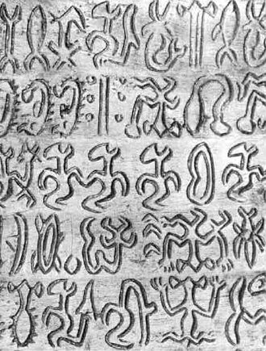
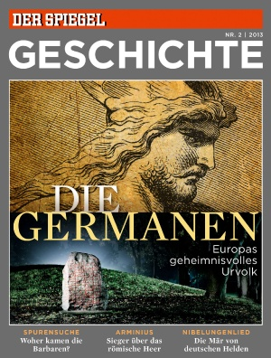

| アマゾン女戦士の会話 南米アマゾン先住民の算数 | |
| 片木 啓 | |
| UNKNOWN (2017) | |
ドイツ人は言語に強い関心を持っています。1772年に「言語起源論」を書いたドイツの哲学者ヘルダーは、理性は言語が生み出したものだとし、当時未開人とされた人々も西洋人以上の理性を持っていると主張しました。
ヘルダーは師であったカントの純粋理性について「人間理性本来の姿である言語の問題を考慮していない。アプリオリな認識などは、言葉の乱用である」と批判しました（ウイキペディア「ヘルダー」） 。
印欧比較言語学に貢献したグリム兄弟や、歴史言語学の教科書ともいうべき「言語史原理」を書いたヘルマン・パウル、ジャワ語の研究から思考と話すことについての関係を追求したウイルヘルム・フンボルトら多くの言語学者を輩出しました。
現実に話されている言語を重視するソシュールらフランスの構造主義言語学とは異なり、ドイツ人は言語の歴史的変遷を重視します。そもそも言語の本質は変化であり、変化によって世界の言語は7000語にも別れました。歴史的変化を抜きにした言語学はありえないと思っているようです。
言語の発生、起源を究明しようという学者は、机上の空論でなく、世界の言語を実地に調べて、言語の由来に遡ろうとしています。
（内容）
▼南米アマゾン川流域のピダハン族の言葉は数の概念が発達していない。数える必要がなかったから、数を表す言葉がなく、数の概念がなければ、計算はできません。人間の集団は自ら言語を作る一方で、その言語に思考を縛られます。
▼太平洋のイースター島の謎の文字「ロンゴロンゴ」の発祥は、モアイ像と同様に神秘に包まれています。西洋人が来てから、まねたという説もあるようです。日本人が漢字から仮名を作ったようなものでしょうか。あるいは、オーストロネシア人の特技である海洋航海のための星の位置を示しているのでしょうか。
▼アマゾンの女戦士を描いたギリシャの花瓶には、ギリシャ文字でありながら、ギリシャ語ではない言葉が書かれています。画家が蛮族の言葉を記録したのか、単なる外国語風の殴り書きか。北コーカサス言語の専門家が、文字列にアブハジア語の古形を見出しました。それは「犬を放せ」という意味と解釈されます。
▼文法は 世界の言語で共通した要素が多く、チョムスキーは人間の生来の能力であるという「生成文法」説を唱えました。チョムスキー学派のアメリカの言語学者マーク・Ｃ・ベーカーは、14の基礎となる言語から、一つの文法システムを提示しました。英語とモホーク・インディアン語のように、お互いに非常に離れた言語でさえ、一つの同じ構造系統樹の中にあるといいます。
▼英語の世界支配がさらに拡大することは、もはやない。英国人の言語研究者のデイビッド・グラッドルは、そう確信しています。 原因は、世界の人口増にある。すでに今日、中国語は11億人が話し、英語は2位にとどまっている。2050年には英語圏の世界の人口順位は、ヒンディー語とウルドゥー語に抜かれて3位になる、とグラッドルは予想しています。
▼紀元前600年ごろ、オランダに住んでいたゲルマン人は鉄器を使う「ヤストルフ文化」を残しました。しかし、その生活はケルト人やエトルスキー人に比べてはるかに質素でした。当時のゲルマン人社会では富を持てる者より、他人に与える者が権力を得たといわれます。
▼人間の理性とは何か。カントは先天的な能力とし、ヘーゲルは理性を絶対視しましたが、ショーペンハウエルは人間の理性と進歩を疑いました。
数字遊び 言葉は思考を規定する ＝2004年8月20日 シュピーゲル・オンライン
その言語の中で、決まった表現が浮かばない民族は、認識の障害に苦しむ。彼らは、対応する言葉がない概念を理解することも出来ない。明らかに言語は、人間が現実を認識する方法を規定する、と現在の研究はいう。
ピダハンと並ぶ研究者ゴードン
言葉がなければ、考えもない
言語の混乱。数字なしに計算はない。
一つ、二つ、たくさん。アマゾン流域に住むピダハン族のメンバーは、数を数えるとき、大雑把である。１でさえ、200人の孤立して生きる部族の成員にとっては、「おおよそ１つ」というほどの、決して多くないことを意味する。そして、アメリカの研究者ピーター・ゴードンがいま発見したように、まさしくこの言語的な不正確さが、ピダハン族の思考と認知能力に影響を及ぼしている。
すでに1930年代から、言語学者の間では、言語は思考の性質と内容を規定する可能性があるという理論が広まっていた。または、別の言い方をすれば、言語の中に現れないことは、人間の思考にも浮かばない。たとえば、ジョージ・オウエルの陰鬱な未来ビジョン小説「1984年」の中で、全体主義的な人間操作の道具として利用された計画のように。
三匹の魚ーそして世界はうまくいく
この説が正しいのなら、ある種の文化の中には、別の文化グループの構成員が決して理解できない、思考法と概念があるに違いない。なぜなら、彼らは、それを表す言葉を知らないからである。
ゴードンは、いま、その説を南アメリカの熱帯雨林でテストした。ニューヨークのコロンビア大学の行動生物学者は、彼が専門誌「サイエンス」で報告しているように、原住民に違った数の魚の絵を使って、試験した。様々な写真の上に、それぞれ、2匹または3匹の魚を見ることができたなら、大人の部族民たちは、たとえ、両方の写真の魚が、異なった形に並べられていても、取り違えることなく、写真を分別することができた。
8匹から１０匹の魚になると、成績は目立って落ちた。一つの写真に10匹以上の魚があると、試験者たちは、まったくできなくなった。これに対して、魚が不規則に並べられ、単純に２匹または3匹のグループに入れることができる場合は、比較は再び成功した。
言葉がない。すなわち、数えることが役に立たない
認識の障害は、明らかに言語に原因がある。なるほど、ピダハン語は複雑であり、その動詞の構造は、他のアメリカの原住民の動詞構造と対応している。しかし、数を数えることは、ピダハン語の中では、役割を果たしていない。すなわち、「数」という言葉さえ存在しない。「～より多い」という表現での比較は、数に合わせた前つづりや、一つと多数の間の区別とともに、欠けている。
ゴードンにとって明白な示唆は、このような（注＝認識の）制約の影響がないことは、すくなくとも、ピダハン人の思考の世界では考えられないということである。「言葉が二つの違った事物を区別することができるかどうかは、明らかに人間がどのように現実を認識するかを規定する」
【感想】
言語はグループの成員が必要だと思う概念を音で表現したものです。ピダハン人にとっては、大きな数は必要がなかったと考えられます。日本語も母音の変化で「１（ひと）」が「２（ふた）」に、「３（み）」が「６（む）」に、「４（よ）」が「８（や）」に倍増して数の認識が豊かになりました。色の名は「黒（暮れる）」「赤（明ける）」「白（記す）」「青（青、藍）」の4色だけでしたが、その後、桃色、黄（木）色、緑（みずみずしい）などが加わりました。
アイヌ人も昔は複雑な数の概念がなく、本州からの悪い商人に取引の際に騙されたと聞きます。
物事に対応する言葉がなければ、それ以上考えることはできません。人間はさまざまな外界の出来事を、整理し、共通の特徴を持つものを「犬」や「牛」というように抽象的なイメージを表す言葉で表現しました。外界を言葉（概念）で整理することで、細かいことにとらわれず、本質的な思考をすることができます。「犬」といっているときは、色は無視しています。どのような色であっても、犬で意思が通じます。
概念は民族によって違います。農耕民族の日本人は雨を区別しています。漁民は風を区別します。これらの言葉は、それぞれ学習によって身につくものです。コンピューターが発達して、コンピューター用語が増えました。語彙は民族の知恵の集積です。
和歌山や大阪の泉南地方では、敬語をしらないといわれます。おそらく、漁労に頼っていたため、身分の分化が少なく、敬語が発達しなかったのではないかと思われます。日本語の敬語は過剰ですが、日本社会では使いこなせない人間は非難されます。
【秘密をたどる迷い道】＝2017年6月16日 南ドイツ新聞 ハラルド・エッゲブレヒト
イースター島のロンゴロンゴ板には文字が刻まれている。その意味は、今日まで解釈が困難である。奇妙なシンボルは、他の知られた文字にはどれも似ていない。板はカレンダーなのか、それとも航海に使ったのか。

ロンゴロンゴ板＝ドイツ版ウイキペディアより
最初にヨーロッパ人の手に入った最初の木の板の断片は、女性の髪の毛でできた18メートルの長さのひもで固く包まれていた。1868年にタヒチの司教エティエンヌ・ジョーサン Etienne Jaussen は、この特殊な包みを不思議に思った。しかし、もっと驚いたのは、この奇妙な文字とシンボルだった。それは、木の破片に刻まれていた。のちに、さらに見つかった文字の板によって明らかになったように、刻んだ人はその作業にサメの歯と黒曜石の破片を使った。
魅惑的な記号を持った、わずか２５枚の板は何百年も伝承されてきた。
ジョーサンは、その2年前に初めて、宣教師の神父エイジーン・エイロードを通じて、奇妙な文字の板について聞いた。その木の板は、伝説に包まれた南太平洋のイースター島で生まれた。エイロードは、それをロンゴロンゴ板と名付けた。その概念は、マンガレーヴァ島からきている。そこで、彼は、儀式の祭りで歌を歌い、リサイタルできる、かのエリートだけでなく、歌そのものも言い表した。もちろん、イースター島の住民ラパヌイ族が当時すでに、ロンゴロンゴについて話していたかどうか、はわかっていない。人文学者であり、言語学者であるジョーセンは、さらなる板を手に入れることに、非常に関心を持った。彼は、尋常でないものが目の前にあることを理解し、イースター島の宣教師たちに、この文字の証拠をさらに見つけて送ってくれるように頼んだ。最終的に彼は、7枚の板について、考えることができた。
このような印と図をもって書き込まれた木の板は、ほかにも合わせて25存在する。それらは、これまでに世界中の博物館に分けられている。それらすべては、秘密に満ちたイースター島で作られたものである。それらは、さらに文献学者、言語学者、考古学者、そして科学のかなたの占い師に多くの謎を課した。
すべて独自の名前を持っている、ロンゴロンゴ板がわずかしか残っていないことは、宣教師にも関係がある。エイロードの記録には、なおこう書かれている。「どこの家にも木でできた板があり、それらは、すっかり文字の印でおおわれている。この印で描かれた動物はこの島には存在しない。このシンボルのすべては名前を持っているが、島民はこの印を読むことも書くこともできない」。抵抗ができなくなるまで弱められたラパヌイ族はしかし、キリスト教化の進展によって、このような異端の文化の生き残りを焼くように指示された。司教ジョーセンの知識欲がなければ、一枚もロンゴロンゴ板は残っていなかっただろう。
この時代にラパヌイ族はほとんど滅んだ。島の住民は、白人の侵入によって、18世紀以来、婦女暴行、殺人、撲殺、暴行、奴隷化に苦しまねばならなかった。そのうえ、異邦人は、天然痘、梅毒、結核、ライ病、そのほかの悪疫などの死の病を彼らに移した。そもそも、何人かのラパヌイ人が生き残ったことが奇跡に近い。
しかし、有名な大石像モアイから、ここだけで発達した唯一のロンゴロンゴ文字にいたるまで、彼らのほぼ1500年に及ぶ文化的な歴史の残存物と遺物は抵抗できない魔力を及ぼしている。他の海岸や島のどこからも何千マイルも離れた、南太平洋にある、この小さな、大むね三角形の孤独な島で、このように非常に様々な顔を持つ、取り替えることのできない独自の高度な文明が生まれたことは、まったくありえないことに近い。
ロンゴロンゴ板を解読しようという最初の試みをジョーセンは計画した。それは、彼がタヒチでプランタージュの労働者として暮らしていたラパヌイ族のメトロという男がジョーセンにテキストを朗読した時だった。テキストは朗読を繰り返すたびに違った読み方になったので、すべての正しさが疑われている。
それでも、彼はブストロフェドン（牛耕式）のテクニックについて知っていた。それはすなわち、左の下から読み始め、その行を左から右へ、そして板をさかさまにし、そして今まで逆さまだった行を続けて読んでいく。以下同じ。このほか、ジョーセンは、シンボルが記憶に基づいた記号であり、記録された歴史ではないことを見出した。この仮説は、スイスの民俗学者のアルフレッド・メトローが証明した。メトローは、1934年にイースター島に滞在した。すなわち、記号は、音声的な機能を持たない。ロシアの民俗学者のボリス・クドラフチェフは1943年に別の板の同じ音の場所を指摘した。
しかし、今日基本になっている仕事は、民俗学者のトーマス・バルテルが行った。彼は1958年に、すべての文字化された対象をリスト化し、すべての文字記号をカテゴリー化し、それを格付けし、これらの基礎の上に対象を解釈しようとした。例えば、多くの天文学のシンボルの基礎の上に、「ママリ」板を月のカレンダーとした。1995年にアメリカ人のスティーブン・フィッシャーは、「サンチャゴ棒」の記号が創造の神話を示しているのではないかと推測した。この棒は、長さ1.12ｍ、直径約６センチの長さで、最も重要なロンゴロンゴ遺物として通用している。それは、ほかの板のすべての合計より多い2320の記号を含み、そのうちの3つの記号ずつ、垂直の分離線によって、一つのグループにまとめられている。これもまた、他の遺物とは異なっている。
ひとつのオリジナルな説をシュトゥットガルトの芸術家ミヒャエル・Ｈ・ディートリッヒが立てた。すなわち、ロンゴロンゴの印は、文字ではなく、星のイメージと空の星のシンボルであり、星は南海の人々にとって海上航海のナビゲーションに役立った。ロンゴロンゴは、イースター島に特殊なものではなく、古い太平洋の航海者の「刻み目を入れた星の知識」である、とディートリッヒはいう。
(ラパヌイ語: Rongorongo, [??o?o??o?o]) は、イースター島で19世紀に
発見された、文字あるいは原文字と思われていた記号の体系。
口伝による伝承では、少数のエリートのみがロンゴロンゴを使用
することができ、これらの文字板は神聖なものであると言われている。
オーストラリアの言語学者Jacques B. M. Guy氏のページの翻訳
＝情報考古学第18 合併号 2012年12月22日発行
【未解読とされていた刻文ロンゴロンゴが解 き明かされつつある】＝ネットより
ロジャー・フィッシャーによると，XとYがまじわってZが生じたという形式の創造の歌もあるという。
結局，ロンゴロンゴは，ヨーロッパ人との接触以後，その影響を受けて，イースター島民がみずからの手で発達させたと考えるのが合理的なようだ。
左から右へという読み方にもその影響がみてとれる。
1770年にスペイン提督フェリペ・ゴンザレスがこの島の領有を宣言したとき，島民がその文書に絵文字でサインしたことが知られている。
そのことが，ヨーロッパの文字に刺激を受けて，島民がみずからの文字を創造することになるきっかけになったのではないだろうか。
【感想】
西郷隆盛ら南九州の人々と、相撲の曙、高見山、小錦、武蔵丸らとよく似ています。おそらく、オーストロネシア人の血が沖縄、南九州の人たちに流れていると想像されます。日本語には「人々」「からから」「するする」「たらたら」など複数形、擬態語、擬音語に繰り返しが見られますが、オーストロネシア語の特徴でもあります。
オーストロネシア人はもともと、中国南部にいた人々が台湾にわたり、長い時間をかけて航海術を進化させました。フィリピン、インドネシアから太平洋、インド洋のマダガスカルにもわたりました。
寒い海での航海にも耐えられるように皮下脂肪をため、オールをこぐためにたくましい体格になりました。磁石のなかった時代は星を見て方向を決め、保存できる米を積んで、何日も航海し、漂着した土地で栽培しました。
【発掘 研究者は奇妙な花瓶の暗号を解読した】＝2014年10月２日 シュピーゲル アンゲリカ・フランツ
古いギリシャの花瓶の上に、しばしば理解できない文字列が見られる。何年も専門家は、これらを無意味なものと片付けてきた。今、一人の女性歴史家がこの謎を解いた。少なくとも、いくつかの花瓶については。
アッティカの花瓶の記号の謎。アマゾン人のそばの文字は何を意味しているのか。
もし2500年後に、考古学者や言語学者が、漫画を手に取ったら、なんと考えるだろうか。おそらく、そのときは、古い言葉をなおも解読し、ほとんどの吹き出しに意味を与えることができる孤独な専門家が、地球上のどこかに存在することだろう。しかし、いくつかの注目すべき文字列には、彼も当惑して頭をかきむしるだろう。「Pfft」があり、「Pow!」があり、それどころか、「 #S%&!」がある。「それは単なる意味のない文字列だ」。彼（注＝専門家）は、そのときおそらく説明するだろう。「多分、この漫画家は全く正確に書けなかった」と。
古代ギリシャの晩期アルカイック（古拙）時代と初期古典時代（紀元前550～450年）のアッティカの花瓶もまた、同じような状態だった。これらの花瓶は人物像が描かれているだけでなく、驚くべきことに文字がついていた。たいていは、描かれている人物、もしくは神々の名前が。
意味のない殴り書き？
しかし、その表面に芸術家が、見たところ、ただ意味のない文字列を人物についてなぐり書きしたと思われる、およそ1500の容器または破片が知られている。考古学者は、これらを常に「ナンセンス」、「ジョーク」、それどころか、「文盲の作品」として片付けてきた。
しかし、アドリエンヌ・メイヤーは、それで満足しようとはしなかった。4年前、カリフォルニアのマリブにあるゲティヴィラのゲティレジデント（注＝石油王ゲティのつくった高級別荘地）の学者として、女性歴史家はアマゾン族についての新しい本のために研究していた。「ゲティの収集品は、アマゾン族が描かれている古代の芸術作品の宝の部屋です」と彼女は書いている。
「ひとつの花瓶の破片が、特に私の気に入った。すなわち、それは、一匹の犬を伴って出発する2人のアマゾン人を描いていました」。二人のアマゾン人の頭の上には、二つの書き込みがある。しかし、ギリシャ文字は、知られた言葉を示していない。「私はなるほど、花瓶の専門家ではない。しかし、私には、あたかも、この書き込みが、二人のアマゾン人の外国語での会話を再現しているかのように思えた」
ただし、それは、どのような言葉なのだろうか。アマゾン人とスキタイ人は、なるほど、ギリシャの芸術の最も好まれたテーマです。しかし、事実上は、これらの概念は、黒海の北とコーカサスの地域出身の遊牧民の広い多様性を描いている。もし、文字列が実際に一つの言語を再現しているのなら、それは、古いイラン語の形かもしれない。また、おそらく、アブハジア語の可能性もある。それともチェルキス語か。ウビキス語でなければ、グルジア語の古い形かもしれない。
謎の多い子音の集まり
「私は、これらの言語の専門知識のある一人の言語学者を探した」とメイヤーは報告している。「そして1年後、ある人を見つけた。それは、北コーカサスの言語の指導的なエキスパートであるジョン・クラルッソだった」。ゲティコレクションの理事デービッド・サウンダースとコラルッソとともに、メイヤーは一見無意味なものに意味を見出すことに取り掛かった。彼らの仕事の結果を、三人の著者が「雑誌ヘスペリア（注＝カリフォルニアの市）」の中で公表した。
メイヤーとサウンダースは、ゲティコレクションの花瓶の中から、アマゾンとスキタイ人の描かれた、対応する品を選び出した。それらのそばには、一見無意味な文字が書かれていた。これらの文字の連続を、彼らは、コラルッソに送った。しかし、コラルッソは、その文字がどの絵に付属しているのかは知らなかった。
「犬を放せ」
こうすることによってのみ、研究者はテキストの解釈を、絵に影響されないように保障できた。そして、実際にコラルッソは、一見意味のない12の文字列を解読することができた。たいていの場合、芸術家がギリシャ文字で再現しようと試みるのは、実際には地域言語を使った名前である。
例えば、花瓶の絵師オットー（紀元前525年～500年）の酒の椀の場合。一方にはヘラクレスとヘルメスが立っている。彼らには、その名前が書かれている。オットーは、正しいギリシャ語を書くことが完全にできた。破片しか残っていない反対側には、戦っているアマゾン人が走り、馬に乗っている。ここでもまた、文字のグループがある。しかし、それらは、意味を示していないように見える。
それは、非常に発音が難しい子音の荒っぽい連続であるしかし、チェルキシュ語には、決して、このような子音の集まりはない。古いチェルキシュ語には、ここで、ギリシャ文字でのみ再現された音の連続がある。それは、「武具に見合う価値がある」である。ステップの遊牧民にとっては、比喩的な名前を授けるのは、ごく通常のことだった。「武具に見合う価値」は、写されたアマゾンの名前には、非常によいものだったかもしれない。
そして、アドリアンヌ・メイヤーが最初にテーマにあげた犬を描いた花瓶はどうか。コラルッソは、アマゾン人の横に殴り書きされたものの中に、アブハジア語の古い形を認めた。もちろん、それは、ここに書かれているアマゾン人の名前ではなく、実際は、二人の会話である。最初の人が「彼らが（彼女が）そこにいた」、もしくは「我々は助け合おう」という。一方、第二の人が答える。「犬を放せ」
【感想】
古代の謎の文字を読み解くのは、未知の事物を解明しようという好奇心と情熱に取りつかれた人々の夢です。イースター島の謎の文字板ロンゴロンゴや、マヤの絵文字なども多くの研究者が一生をかけて取り組んできました。解明できるかどうか展望がない、ひょっとすると文字を知らない職人の殴り書きかもしれない文字列に、一生を棒に振るリスクをかけて、取り組む学者は、好奇心と名誉心によって突き動かされているといえるでしょう。「どうせわからない」といっては、おしまいです。
ここに書いてある解読が本当だとしたら、古代のアマゾン女性戦士の実態も解明できるかもしれません。言葉によってのみ、民俗の歴史と文化は伝わります。ドイツ人が言語研究が好きなのは、好奇心が強い証拠かもしれません。好奇心が人類の理性の進歩を生んできました。
古代日本語と高句麗語の比較をしているハワイ大学など外国の学者もいます。古代日本語の系統解明が、世界の言語の法則を知っている外国人学者に先を越されることがないように、してほしいものです。
普遍的な文構成の公式が見つかった？ ＝2002年1月28日 シュピーゲル・オンライン
英語であれモホーク語であれ。すべての言語の根底には、唯一の構造プランがあると、一人のアメリカの研究者は信じている。その普遍文法は、自動翻訳を進めるはずである。
モホーク・インディアン。すべての
言語に通用する1つの構造図式
その夢はすでに以前から、長らく存在した。ただ、それをまだ誰も実現していない。もし、すべての人間の言葉が、唯一の構成図式に適合しているのなら、翻訳の問題はついに解消されるだろう。すでに、数十年前に、アメリカの言語学者のノーム・チョムスキーが、すべての人間の脳の中に、いわば固く配線されている階層的な文構造の公式の存在を仮説として提示した。
彼の同業者の多くは、もちろん、それ（注＝チョムスキー仮説）を疑っている。彼らは、言語は世界的にあまりに異なっていると考えている。しかし、いま、チョムスキー学派のマーク・Ｃ・ベーカーは、風穴を開けたと信じている。彼の本「言語の原子」の中で、ニュージャージー州のラトガー大学の言語学者であるベーカーは、これまでに14の基礎となるパラメーター（注＝媒介変数）から、一つの文法システムを提示している。英語とモホーク・インディアンのように、お互いに非常に離れた言語でさえ、一つの同じ構造系統樹の中に捉えたと、ベーカーは信じている。
ベーカーが正しいかどうかは、実地の応用が示すに違いない。すでに1970年に、論理学者のリチャード・モンタギューは一つの優美な簡潔な普遍文法を提示した。しかし、自動翻訳のためには、彼の非常に抽象的な公式の仕事は、役に立たないことが分かった。
【感想】
人類の言語は語彙は様々に分化していますが、文法は基本的に似ています。トルコ語、朝鮮語、アイヌ語などと日本語の語順は、ほとんど同じです。
私は以前ドイツへ行ったときに、トルコ人の八百屋のお兄さんに、トルコ語の単語を、日本語の語順で並べたメモを見せて、「わかるか」と質問しました。残念ながら、彼は「まったくわからない」と答えましたが、想像力があれば、理解できたはずと、今も信じています。文法は確かにすべての言語に共通した点があります。
チョムスキーの普遍文法は、その文法が共通の理由を、脳の構造に求めました。しかし、言語が論理的に構成されているのは、人間の時空の感覚や自然の原因と結果を反映しているのであって、文法規則は、あくまで集団が意思を明確に通じさせるために、取り決めたルールであると考えられます。
文法は人間が生まれながらに持っている論理能力ではなく、ドイツの哲学者ヘルダーのいうように、人間が親から教えられて身に着けたものだと考えられます。生まれながらの能力なら、この記事のいうように、もっと楽に言語も学習でき、自動翻訳ができることでしょう。実際は、ネイティブでないと、言語は完全にはマスターできません。生成文法説は、言語は神から与えられたものだという神学者の説に似ています。
現在、現実にＩＴの発達で、自動翻訳は進んでいますが、これは集団のルールをコンピューターに学習させた結果であって、人間の学習と変わりません。
結局のところ、文法が似ているのは、やはり、言語がもともとは一つだったという歴史的事実に帰着するのではないでしょうか。ニュージーランドのアトキンソン教授の言語アフリカ同一起源説に説得力があります。
世界言語 さようならイングリッシュ ＝2004年2月27日 シュピーゲル・オンライン
アングロアメリカンの優勢は終わりに向かっている。少なくとも言語に関しては。言語研究者は、英語の意義は減少するだろうと予言する。その代わりに、経営者や科学者は、中国語、ウルドゥー語、ヒンディー語を学ばなければならなくなる。
中国を訪問したシュレーダー。
未来は通訳がいらなくなる？
国際的に成功しようと思う者は、英語を話す。それは、いまも変わらない。とはいえ、今後二、三十年で、それはまったく変わるかもしれない。なぜなら、しばしば、いわれてきたように、英語の支配がさらに拡大することは、もはやないからだ。とにかく、言語授業の専門機関である「イングリッシュ カンパニー」の英国人の言語研究者のデイビッド・グラッドルは、このことを確信している。
「言語の世界システムは危機的な地点に達した」と、専門誌「サイエンス」に、グラッドルは書いた。「このまま直線的な進展が数百年続くなら、言語システムはひどく混乱するだろう」。「その原因は、とりわけ世界的に誕生が増えること（注＝人口増）にある。まさに、アジアの国々において、人口は激しく増えており、その結果、英語を圧迫している。英語は、他の言語の犠牲の上に、グローバルな言語に発展するという考えは、保証期限を、とっくに過ぎている」と、グラッドルは言う。
中国が先導する
すでに今日、英語は母語として話している人の数では、2位にとどまっている。トップの座にある中国語には挑戦者はいない。今日、中国語をあらゆるバリエーションで使う11億人以上の人間が育っている。英語を母語とする人の3倍多い人間である。
それどころか、2050年には英語圏の世界の人口順位は、3位になる。アジアに広く普及し、カタールからネパールまでの地域で話されているヒンディー語とウルドゥー語に抜かれると、グラッドルはいう。そのときには、英語は世界人口のわずか５パーセントの人間が話している。その１００年前にはまだ９パーセントあった。２０５０年までには、スペイン語とアラビア語も追いついてきて、英語のすぐ後ろに控えるだろう。
さらに第２列の言語が激しく成長する。ベンガル語、マレー語、タミール語が平均を超えて増える。１億２００万人が母語として話し、最新の調査で10位だったドイツ語は、トップ10から転落する。
ドイツ語は退潮する
しかし、事態はもっと悪くなるかもしれない。グラッドルは、現在世界に6000ある言語の約90パーセントが、次の1世紀を生き残れないとみている。「すでに今日、われわれは毎日ひとつの言語を失う可能性がある」と、この言語学者は書いている。しかし、ひなびた言語が死滅する一方で、都市では、そこに住む人々の違った言葉の混合形である、全く新しい言語が進化する。
そして、英語に対しても、新しい言語の世界秩序の中でなお、最初の外国語としての、場所はあるだろう。なぜなら、ますます、多くの割合の人間が一つ以上の言語を話すから。そう、言語学者は確信している。英語は、しばしば、その一つであるだろう。しかし、次の10年に、アジアでだれも避けられない言語は、中国語である。「それに抵抗し、未来でも、ただひとつ英語だけを話す者は、多言語社会の中で、問題を抱えることになるかもしれない」と、グラッドルは言う。
【感想】
40年前に北京特派員をした人が、当時貧しかった中国について「あの国はどうしようもない。これからも変わらないだろう」とけなしていましたが、予想は全く狂い、先見性のなさを露呈しました。その後、中国は破綻したマルクス主義をいち早く放棄して市場主義に切り替え、飛躍的に発展しました。実利に敏感な国民性が市場主義に向いていました。日本の成功をモデルにしたのも成功の一因でしょう。
もともと、漢や唐などの大帝国を築いた底力はあり、ハングリー精神がなお健在なので、今後も発展するでしょう。日本も落ち目のアメリカにいつまでも頼っていられません。中国とうまくやっているドイツを見習うべきでしょう。
中国語は世界の言語の中でも特異な言語で、活用（音韻変化）を基本とする印欧語、接辞を多用する（膠着する）ウラルアルタイ語などと違って、単語は変化せず、語順で意味を区別する文をつくります。しかし、中国語も四声（アクセント）で同音異義語を区別し、単語を重ねる熟語で単語を増やしています。接辞的な語彙もあります。基本的にはもともと、共通だったと思われる人類祖語から進化したものと思われます。
【ヤストルフの謎 】＝2013年3月2日 シュピーゲル ディートマール・ピーパー
オランダの先史時代の埋葬地は、考古学者たちに原始ゲルマン人の手がかりを与えた。彼らは、ヨーロッパの貧困者ホームに住んでいた。

ゲルマン人の古代史は、一人の才能ある、好奇心に満ちた学生の物語でもある。グスタフ・シュヴァンテスは、1881年、エルベ川沿いのブレッケーデに生まれた。若くして考古学に夢中になり、すぐに驚くほど詳しくなった。遠い過去の証拠品を確保するために、根気よく、彼は故郷のオランダの大地を掘った。学校の休暇には、兄弟のクルトとともに、しばしば、考古学の宝さがしに行った。
1897年にシュヴァンテス兄弟は、ヤストルフ村の北の原野に、数多くの墓の容器が砂の中に埋まっている兆候を得た。当時16歳のグスタフにとって、ヤストロフのこの骨壺は、生涯のテーマとなった。なぜなら、若い研究者、のちに、今なお、その専門分野の偉人に数えられる教授は、この発見物によって、一つの重要な認識に達したからである。一つの時代全体に、ヤストルフ文化の名前を与えたのはグスタフ・シュヴァンテスだった。その概念は、間もなく一般的に認められ、今日に至るまで、通用している。
ヤストルフ文化をもって、紀元前600年ごろに、一つの新しい時代が始まった。 その中で、多くの科学者が、ゲルマン人の最初の証明された登場を見ている。大変動は北ドイツの大部分を含み、デンマークのユトランドに至る地域で起きた。この地理学的空間で当時、青銅時代が終わりを迎えていた。すなわち、鉄の時代が始まった。人類は鉱石から道具、装飾、そして武器に使う固い金属を得る精錬技術を次々に学んだ。
よりによって、エルチェンとリューネブルグの間のオランダの平地の墓場が、なぜそう重要なのか。それを理解するためには、人はさらに深く、古代史の森にもぐらねばならない。専門の表現、秘密、研究の穴、そして矛盾に満ちた独自の王国に。
この世界では 、小さな対象物が大きな役割を演じる。素人にとっては、ほとんどの考古学的発見物はつまらないものだ。しかし、科学者によって、それらは夢中になって調査され、分類され、解説される。数千年たったヤストルフ文化の場合は、それは、飾り針、衣類のブローチ（注＝えりどめ）、そして焼かれた粘土でできた骨壺である。それらは、もつれた状況証拠の鎖の中で、中心的な証明材料として価値がある。
ゲルマン人の古代史が、より単純に、一目瞭然に把握できないのは、とりわけ、その時代の人々に原因がある。ゴート人、ザクセン人、フランク人は、キリスト生誕の数千年前からの文字による資料、立派な建築、独創的な芸術作品を残さなかった。探偵の様に、研究者は、今日なお残っている乏しい痕跡から、歴史の断片を読み取ることを試みなければならない。通しの物語にするためには、これまでのところ、材料が不足している。
まったく違った道を通って、言語学者は過去に光を当てることを試みる。今日の言語と、ゴート語で書かれたウルフィラの聖書のような古い文字資料から、彼らは、鋭い組み合わせによって、昔の人々がどのように話していたのかを、推論する。言語学者は、どのような言葉がお互いに親戚なのか、どのような法則によって発音と文法が、時代の経過とともに変化したかを、見出した。
そうして、18世紀以来、その細部の多さに希望をなくして人が自らを見失う博学の記念碑ができた。現在もなお残っている、すべての謎において、大きな線が確かなものとして有効である。すなわち、ギリシャ語、ペルシャ語、サンスクリット語が属するインドゲルマン語から、第一次、またはゲルマン語の音韻遷移の中で、一種の原始ゲルマン語が進化した。そして、話されている言語は常に流れているために、そこから、何百年の経過の中で、ドイツ語、英語、そしてその他の今日の言語が生まれた（50ページの囲み記事参照）。
その専門分野の名人たちは、そればかりか、折に触れて再構築された言語でおとぎ話を語ることさえ、して見せた。小さなおとぎ話「羊と馬」は、インドゲルマン語学者のアウグスト・シュライヒャー（1821～1868）に遡る。それについては、これまでに多くの版が存在する。そうして、ミュンヒェンの言語学者のヴォルフラム・オイラーは、キリスト生誕の時代の言葉を推論することを試みた。「awis, pazmai wullo ne wase, exwanz gasax, ainan kurun waganan wegandun , anperan mekelon burupinun, pridjanon gumanun berandun 」は、次のような意味である。「毛のない一匹の羊が、重い車を引いている馬を見た。別の馬は重い荷物を運び、三匹目の馬は人間を乗せていた」。「wullo」「waganan」は、すぐに類推できるが、そのほかはより難しい。
16歳の学生グスタフ・シュバンテスに戻ろう。彼は、情熱的な発掘者であるほかに、徹底的に考える思想家でもあった。ヤストルフと、似た墓場の骨壺の中には、焼かれた死体の灰だけがあったのではなかった。遺族は死者にしばしば、いくつかの副葬品を与えた。とりわけ、装飾した服の針、青銅や鉄でできた帯の金具を。
とくに興味深いのは、鉄の出土品だった。この金属は、この時代までは、これほど北まで進出していることは珍しかった。若い研究者はそこで、次の疑問に悩んだ。「鉄はどこから「来たのか」
北の地域での古代史の分野での重要な権威 として、19世紀末にはノルウェー人のイングバルト・ウントセットが認められていた。ヨーロッパを横切る旅で、ウントセットは、ローマの支配の前の暗黒時代における大陸で、文化がいかに発展したかを明らかにするため、鉄の痕跡を追っていた。
ウントセットと他の研究者にとって、中央ヨーロッパでの鉄器時代は、いわゆるハルシュタット文化とともに始まった。ハルシュタット文化は、オーストリアのザルツカンマーグートにある場所にちなんで名づけられた。そこでは、1846年に豊かな副葬品を持った大きな墓場が発見された。そして、今日までハルシュタット時代は、科学における動かない標準となっている。それは、紀元前800年から475年まで続き、スロベニアからフランスまで伸びた。当時の人々については、ほとんどわかっていない。ハルシュタット人は紀元前650年以降は、しばしばケルト人として描かれている。
紀元前5世紀にハルシュタット文化は、ラテーヌ文化に移った。これもまた、今日まで確実な知識標準となっている。ラテーヌ文化は、その名前を発見場所のスイス・ラテーヌに基づいている。ラテーヌの人々も同様にケルト人だった。
彼の読書や専門家との対話によって、青年グスタフ・シュバンテスは、すでに研究の状況がよくわかっていた。しかし、ひとつのことが彼には理解できなかった。すなわち、ノルウェーの偉大な学者はなぜ、ケルトの加工品とはまったく形が違うにもかかわらず、北ドイツの発見物をラテーヌ文化に分類したのか。シュバンテスが兄弟とともに、自ら大地から掘り出した物は、ウントセットの著書のいくつかの例に似ているように見えた。しかし、ラテーヌとは？
他方、ウントセットは矛盾しているように見えた。それなのに（注＝ヤストルフをラテーヌ文化と分類しながら）、彼は、ヤストルフの大地に横たわっていた、首の長い骨壺の形を、より古い時代、すなわちハルシュタット時代からの輸入品と解釈した。それはおかしい。
シュバンテスはのちに、メモしている。「ここに尊敬すべき人の間違いがあると、仮定することは、当時の私の思考とは完全に離れていた」。しかし、疑問はその後何年も彼を悩ませた。「ヤストルフの発見物は、本当にケルトの物なのだろうか」
1899年のある夕べ 、若き研究者は、再び、「古いハンブルグの市立図書館の畏敬の念を起こさせる部屋」に座っていた。その部屋は、大人になった彼が、感謝して書き留めているように、「私の学問的な発展のために、最も重要な意味を持った」。「人類学のアーカイブ（注＝書庫）」の最新巻の中に、シュヴァンテスは女性科学者ヨハンナ・メストルフの考察を読んだ。
キールにある祖国の古代博物館の女性館長は、その本の中で、シュレスヴィヒ・ホルスタインでの鉄器時代の始まりについて、いぶかしく思っていた。シュヴァンテスが書いたのと同様に、メストルフは、「ラテーヌではなく、ハルシュタットが我々に鉄をもたらした」とはっきり述べていた。
いくらかでも、研究職の身になって考えた者は、いまやおそらく、大望のある考古学者の中で、何が起きたか、追認できるだろう。その本は彼にとって「まさしく途方もない意味があった」。「私の中で、すべてが、煮え沸き立つ興奮の中に陥った。そして、考えの渦の中から、最終的に認識が出てきた。すなわち、おまえは、とうとう、ヤストルフの謎を解いた」。
クリスマス休暇に、生徒は長い手紙をヨハンナ・メストルフにあてて書いた。彼女は、科学的指導者として認められていた19世紀の数少ないドイツ女性の一人だった。もちろん、もちろん彼女には、プロフェッサーの称号はまだ認められていなかった。そのことが、シュヴァンテスを当惑させた。「あの女性に対して、単にフロイライン（若い女性への呼び掛け＝お嬢さん）メストルフと呼び掛けることは、私には、失礼なことのように思えた」。結局、彼は、「権威あるあなたに」の呼びかけで、手紙を始めた。
権威者は打ち解けた人て、親切だということがわかった。すでに、数日後に返事のハガキが、その後すぐに詳しい手紙が届いた。その手紙の中で、メストルフは推測を認めていた。のちにシュヴァンテスは、彼によって名づけられ、徹底的に研究されたヤストルフ文化について、総括して書いた。すなわち、ヤストルフ文化は、ケルト人がラテーヌ様式を発展させたと同じ時代に、ゲルマン人によって作られた最初の中央～北部ヨーロッパの全鉄器時代の様式だった。
これらの人間の生活について、我々は何を知っているだろうか 。彼らは、耕作者であり、家畜飼育者であり、分散して農場、または小さな村に住んでいた。穀物の種類の中では、大麦が最も重要であり、しかしまた、カラス麦やキビ、小麦、ライ麦もまた、人々が満腹するために供給された。このほか、エンドウ豆、ソラマメ、レンズマメがあった。人は、砂を好んで耕した。なぜなら、砂地の畑は原始的なカギの付いた鋤で、うまく耕せたからである。
最重要の家畜は、牛だった。それは、子牛やミルクを生産するために、長く飼われた。発見された濾過用の容器は、ミルクが好んでチーズに加工されたことを推測させる。豚、羊、ヤギも食事としてテーブルの上に上がった。犬は番犬や、狩りの同伴者だっただろう。狩猟と漁労はもちろん、それほど大きな役割をはたしていなかったように見える。
200人から300人の住民のいる村は、すでにかなりの集落とみなされている。ヤストルフのゲルマン人の普及した建物のタイプは、柱の家である。家を支える木の柱は1mまで地中に打ち込まれ、壁として丸太の厚板または、粘土で埋めた格子が使われた。建築術的にみると、柱の家は、ずっと後の中世になって登場する枠組み建築の先駆けだった。
古い建築様式の主たる問題点は、腐ることだった。地中に差し込まれた柱は、20～30年で、ひどく腐ったので、家はもはや修理できなくなった。新しい家への引っ越しは、不可避だったと判明した。また、大地はしばしば、疲弊するので、村落共同体全体が、家財道具をまとめて、近くで新しく始めた。その際、人は通常、神聖な場所すなわち墓場によって、方位を決めた。墓場は、このような移住の円の中心を形作っていた。「先祖が横たわる場所は常に居住地の固定した点だった」と、ハンブルグのヘルムス博物館長である考古学者ライナー・マリア・ヴァイスはいう。
死者の崇拝 はすべての外観から見て素朴だった。埋葬は、人が死者に死後のさらなる生活を与えたいと願っていたことを暗示している。古代ゲルマン人の精神的な世界については、よくわからない。たとえば、湖、沼、川、石の塊、そして居住地は崇拝の場所として知られている。骨の遺物は、まれな人身御供を推測させる。好まれた犠牲の動物は馬、犬だったと思われる。原始的な木の偶像は、超人間的な存在を象徴化した可能性がある。人々の農民的な生活様式からは、彼らが豊穣崇拝の信者だったことが推論できる。
古代ゲルマン人にとって、長寿はただまれにしか、与えられていなかった。高い子供の死亡率の犠牲にならなかったものであっても、しばしば栄養失調と過労、病気に苦しんだ。墓場の出土物からは、最初の平均寿命は30代の半ばだったことが明らかになっている。60歳で始まる老齢に達するのは、おそらく、ただわずかな人だけだった。
ヤストルフ時代からの墓の設備は、大量にある。多くの墓に、骨壺はわずかなである。他方。数千人の入った巨大な墓が問題となる。考古学者の研究の目は、様々な骨壺の模様と、埋葬形式の間の副葬品のスタイルの大きな差を発見している。時には、特に貴重な品物が出土する。首輪、鎖の下げ飾りなど。後期ヤストルフ時代の墓場からは時に武器や、騎馬の付属品、もしくは南方から輸入された金属の容器が出土する。
しかし、光輝と華美については何百年もお話にならない。要するに、古代ゲルマン人は質素な農民の乏しい生活を送っていたのである。
いったい、なぜなのか。なぜ、長い年月の間、わずかな変化しかなかったのか。それどころか、なぜ、ヘルムス博物館のヨッヒェン・ブラントのような専門のエキスパートは、青銅時代に比較して「大きな退行」を見るのか。ブラントは総括する。「考古学的な資料は、新石器時代以来、中央ヨーロッパの歴史で、ほとんど比較できるものがない、洗練されていない、貧しい住人を示唆している」と。
この国で、鉄器時代と、それ以前の文化段階を分ける断絶を、わかりやすく説明するためには、ブランデンブルグ州のプリグニッツにあるセディンのいわゆる王墓を見ることが役に立つ。直径60メートル、高さ10メートルの丘には、墓室が隠されている。それは9つの大きな捨て子石（注＝氷河によって運ばれ置き去りになった石、漂石）からなり、粘土で塗られ、赤く描かれている。3人の死者は、この豪華に作られた埋葬場で、彼らの最後の安らぎを見出した。彼らのために、1本の剣、そして、ひげそりや、什器、輪、ナイフ、櫛などといったあらゆる道具類が副葬された。
セディンの記念物は、紀元前800年ごろの後期青銅器時代に由来する。その後すぐに、重要な文化の業績を示す死者のための高価な支出は姿を消す。
ヤストルフのゲルマン人が、静かに一人で、まじめに仕事をしている一方、南のケルト人には、青銅器時代の金持ちの思い上がりをやめる気は全くなかった。そこでは、上流階級に所属する者は、力の限り、人生を謳歌した。彼らはギリシャ人やエトルスキー人のように、洗練された食器で食べ、金の飾りを持ち、２つまた4つの車輪を持つ車を、国中に走らせた。
この数百年の間に世界的な交易があったことは、考古学的に証明されている。デンマークに至るまで、高度な品質の工房から出た豪華な品物が到達していた。たとえば、グンデストラップの銀の鍋が示しているように。その鍋はおそらく、今日のルーマニアまたはルーマニアから北へ来た。おそらくデンマークの有力者の体面に役立てるための輸入されたデイビイェルグの車は、ケルトの手工業者の高い芸術的熟達によって生み出されたのだろう。
北ドイツの低水準を迂回して 、しかし、当時の素晴らしい製品は大きな弧を描いている。これは単なる偶然といえるのか。
ハンブルグの考古学者ブラントは、一つの仮説を持っている。ヤストルフの遺物が示すような、社会的関係について考えれば、見たところ、古代ゲルマン人はすべて、同じようにかなり貧しく、それが長く続いた。そのことに、ブラントは気が付いた。共同生活とはすなわち、文化人類学の中で「セグメント社会」と名付けられる、一つのモデルに従うことかもしれない。
それはこういう意味である。生きることは、家族や、少し大きな家族連合の中で、営まれる。それより上位にある部族や、民族の利益は完全に目立たない。氏族がお互いに平和的にうまくやっていくために、氏族は決まった規則に従う。たとえば、誰が誰と結婚するかを決める規則など。争いになる問題を、家長たちは互いに交渉して片付ける。
このような社会に典型的なのは、広い地域にわずかな人間が住んでいるということだ、とブラントは言う。「通常は、接触を避けることができます」。それにも関わらず、財貨の分配に関しては、かなりな社会的圧力が支配している。簡単にいうと、持てる者は与えなければならない。
そうなると、剰余を生産しようという刺激は少ない。このような規則を内面化（注＝深める）した社会では、権力は富ではなく、他者に贈る能力に基づく。得る者は、「社会的債務者（注＝恩義を受けた人）」であり、与える者がボスである。
これらは少しロマンティックに聞こえるかもしれない。簡素な生活と経済的な田園コンミューンに基づいているように。しかし、なぜ古代ゲルマン人がこのようにわずかなものに満足していたかという、よりよい考えは、まずすべての人が持つべきである。
【感想】
平易なドイツ語で、外国人にもわかりやすく書いてくれています。ゲルマン語もキリスト生誕時は、いまのドイツ語と似ても似つかぬ形です。2000年で言語はかくも変化します。
この記事によると、ゲルマン人は太古から質素だったようです。持てる者より、人に与えるものが尊敬され、リーダーになったと書かれています。昔は名誉が富より重視されたのでしょうか。イスラム教でも、金持ちは貧しい人に与えるのが当然視されていると聞きます。旧ソ連時代のアゼルバイジャンを旅行した知人は、電車の中でものをねだられたそうです。
貧しかった昔、人類は分け合って暮らしていたのでしょう。自分本位の弱肉強食は、資本主義になってからで、昔は宗教が我欲を抑えるように教育していました。
豊かさを謳歌したローマ人は、冷たい霧の森に暮らしたゲルマン人に国を奪われました。ヨーロッパ中央銀行が、ドイツ人の倹約ぶりを馬鹿にし、投資と消費を勧めても、ドイツ人はゼロ金利の預金を守ります。
倹約はドイツ人の性質にしみついているのでしょう。
★啓蒙思想
ヨーロッパの啓蒙時代は理性は真理を明るみに出すことができるという考えによって支えられている。理性教（注＝フランス革命の時代の非キリスト教化運動）はキリスト教の独断的な抑圧、権威信仰を克服し、すべての人に自由と福祉をもたらすはずだった。そのように、合理主義は理性の中に、「純粋な」すなわち、経験から独立した認識を見た。その認識は、デカルトやスピノザ、ライプニッツの哲学体系の基礎を作った。人間理性の概念は、しばしば、意識、自己意識、もしくは精神と同一視された。合理主義では、理性は認識プロセスの中心の要素を示した。それゆえ、理性をもって、感覚的な知覚がなくても到達できる演繹的な（注＝前提から結論を引き出す三段論法。多くの例から結論を出すのは帰納法）認識が可能になる。経験論（例えば、デイビッド・ヒューム）は合理主義と反対の立場に立つ。経験論は先験的な、すなわち経験なしの認識の可能性を否定する。
★カント
インマヌエル・カントは18世紀の終わりに、合理主義と経験論の始まりを彼の批判哲学の中で、統合した。カントによって、理解力（悟性）より高い認識原理としての意義が理性に決定的に与えられた。彼は、悟性を感覚の印象に結びついた、後天的に機能する認識能力として定義した。理性については、理論的な（純粋な）理性と、実践的な理性を区別した。理論的理性とは、カントによれば、結論を導き、自ら試し、経験とは独立して、先天的な（注＝先験的）理性の概念（魂、神、世界）に到達する能力である。
彼の著書「純粋理性批判」の中で、カントはとりわけ、人間理性の限界と条件を示そうとした。それによって、理性の概念は、形而上学的な思弁から解放され、科学的形而上学の道が開かれることが可能となるという。カントは、これによって、今日実行されている最も重要な科学の方法に本質的に貢献した。その方法では、理論の発展と、経験的実験が交互に行われている。これに対して、実践的理性は、カントによれば、倫理上の原則の設定に関係がある。その原則に対しては、意思は服従し、その原則は行動を個人的または社会的に根拠づけ導く。純粋理性批判の第1版の序文の冒頭で次のように書かれている。
「人間の理性は、その認識の一つの種類の中で、理性が拒絶できない問いによって悩まされるという特別な運命を持っている。なぜなら、理性は理性自らの性質によって、問いを課せられるが、理性もまた答えられない。なぜなら、その問いは、人間理性のすべての能力を超えているからだ」
★ヘーゲル
カントが認識と理性の限界について書いたあとで、ドイツ観念論の何人かの代表は、このことに満足しなかった。ヘーゲルは、カントの理性についての洞察を、自由の基礎（本質）と明確に認識した。しかし、彼はカントのポジションを主観的と名付けた。なぜなら、彼（注＝カント）は主体が物の真の現象（注＝感覚で把握できる外部の形）を認識できること、それが物自身（注＝神、魂など）ではどうなのかは認識できないと認めたからである。このポジションを越えるには、絶対理性が必要となる。ヘーゲルにあっては、それは思弁の能力である。その能力は、絶対的なものを、すべての瞬間の運動の中で把握する。それ（注＝絶対理性）は、ヘーゲルにとっては、永遠に自分自身から出てきて、二つに分かれる統一と意味をもたらす土台である。絶対理性は、歴史の流れの中で、（時代）精神と自然として、自分自身を常に新しい現象に実現し（または、材料とし）、再び統一し、そして「自分自身に（または自分自身の中へ）帰っていく。ヘーゲルは言う。絶対理性はすべてを自分自身の中に取り込み、そしてその形（統一）に持っていく。すなわち、根底には境界はなく、無限である。そして、絶対精神はただ自分のみを認識するがために絶対なのである。絶対理性自体は、ヘーゲルにとっては神であり、絶対精神である。絶対理性を認識することは、ヘーゲルにとっては、すべての哲学の最高目標である。理性と歴史経過との結びつきは、その後、マルクス主義によって、特に非常に明確な作用を発展させた。理性と進歩（経済的、科学的、技術的、社会的）はそれ以来、その社会的意味の中で、お互いに結びついた。これに対し、啓蒙運動以来の理性の自由思想ははるかに押しやられてしまった。
★ショーペンハウエル
アルツール・ショーペンハウエルは見ることのできる認識の能力としての悟性（注＝理解力）と、抽象的な論証的認識の理性（注＝推論）とを区別した。彼は理性を人間に特別なものと見た。理性に対して理解力は、（高度な）動物にも属している。これらの高度な動物は、それどころか、多段階の因果関係もまた、理解して把握できるが、理性的に考えることはできないという。なぜなら、彼らには抽象的概念と表象（注＝想像力）が欠けているからである。
★近代哲学
20世紀の恐怖（ホロコースト、帝国主義）に直面して、そのことと工業化との関係を見たフランクフルト学派の人々によって、合理主義への批判が起こされた。彼らは、肯定的に規定された近代の科学研究と、その事実信仰を批判した。理性と悟性は、個人の抑圧の道具となり、理性の「自己解放能力」をほとんど窒息させたという。ユルゲン・ハーバーマスは、「道具としての理性」（テオドル・W・アドモ、マックス・フォルクハイマー）に対して、生活世界の「コミュニケーションする理性」を対抗させた。それは、支配と暴力からの自由と、お互いの承認に基づいている。啓蒙の新しい段階が必要である、とハーバーマスはいう。啓蒙はまだ完成していない。
法王ヨハネス・パウロ2世は、１９９８年の彼の１３回目の回勅「信仰と理性」の中で、理性と信仰の間の緊張分野をローマカトリック協会の目から見てテーマにしている。法王ベネディクト１６世は、２００６年９月のレーゲンスブルグ大学での講演と、カトリック教会の神の像への表明の中で彼の先任者の思想を取り上げている。
★神経科学
脳神経科学では、理性は、流動性の知性、すなわち、論理的思考と問題解決のための能力と把握される。このための権限のある脳神経構造は、ドルソラテラール（背面の）プレフロント（前頭葉）コルテックス（皮質）（DLPFC）にある。この脳の部分が傷つけられると、該当する患者は、「非知性的な」（例えば状況が変わっているのに、行動が対応できず、片意地である）。「理性」は、「理性的な行動」のために必要な能力と理解される。そのほか、客観的な社会的行動の連続の評価、経験に導かれる行動目的と利己的な行動衝動のコントロールに必要な能力である。これに対応する構造は、とりわけ、眼窩前頭皮質（がんかぜんとうひしつ）に位置している。この領域を傷つけられた人物は、「不合理な」行動（例えば、よりよい知識に反して危険を冒すなど）を示す。
感性と悟性とは異なる能力である。そして、これらを媒介するものは、構想力 (Einbildungkraft) の産出する図式 (Schema) である。また、感性の多様 (Mannigfaltigkeit der Sinnlichkeit) は統覚 (Apperation) 、すなわち「我思う」（Ich denke: つまりデカルトのコギト）によって統一されている。しかし、理性には、自分の認識を拡大し、物自体ないし存在を把握しようとする形而上学への本性的素質 (Naturanlage zur Metaphisik) がある。このため、認識理性は、ほんらい悟性概念の適用されえない超感性的概念・理性概念をも知ろうと欲し、それらにも範疇を適用しようとする。しかし、カントは、認識の拡大へのこの欲求を理性の僭越として批判し、認識 (erkennen) されえないものはただ思惟する (denken) ことのみが可能であるとする。そのような理性概念として、神、魂の不滅、自由が挙げられる。
【関連 純粋理性批判について】＝タブラ・ラサ、イタリア語版からの翻訳
イギリス経験論によって提起された、人間の認識能力への批判。カントの批判哲学は大陸合理論とイギリス経験論を融合するものとして築き上げられた。人間の理性とは何か？理性が理性自身の法則によって推論を進めた結果、二律背反（アンチノミー）に陥るという理性の欺瞞的本質をカントは、指摘していく。
１７８１年に刊行された『純粋理性批判』第一版序文の冒頭は次のような文から始まる。"人間の理性は、ある種の認識について特殊の運命を担っている。即ち理性が斥けることもできず、さりとてまた答えることもできないような問題に悩まされるという運命である。斥けることができないというのは、これらの問題が理性の自己本性によって理性に課せられているからである。また答えることができないというのは、かかる問題が人間理性の一切の能力を超えているからである。"
理性が陥る昏迷と矛盾は、理性が経験の経過において使用される原則から出発することを起因としている。カントが唱える"批判"とは理性による理性の自己批判、つまり、"理性が一切の経験にかかわりなく達得しようとするあらゆる認識に関して、理性能力一般を批判すること"を意味している。この批判哲学は、理性批判の哲学であり、理性は形而上学を営む能力を保持することから、理性批判は形而上学批判となる。
カントは、経験に基づく認識を"ア・ポステリオリ"(a posteriori - 後天的)と呼び、また経験によらず、私達の内部にあらかじめ具わっている普遍的そして必然的な認識を"ア・プリオリ( a priori ? 先天的)と呼ぶ。
ショーペンハウアーによる定義
ショーペンハウアーによると、理性とは、抽象的認識である概念を扱う能力であり、それ以上でもそれ以下でもない。概念を扱うというのは、知覚、つまり視聴覚や触覚に現れた感覚を脳が悟性によって時間と空間と因果性の形式をもって現象として現れた客観世界から特定の要素を抽出し、その要素同士を組み合わせて抽象的思考を行う能力のことである。簡単に言えば、文章を読み書きするような活動において、全ての人間の頭のなかでこの作業が行われている。しかし抽象的思考は、結局は知覚に表れる直接的認識をいわば水源として汲んできたものであるから、常にそれと対応するのでなければ、机上の空論であり無意味である。ゆえに理性は単に反省(reflection)の能力であって、彼によると無能な哲学教授達が言うように、それ自体で超越的存在(神)を予感できるような偉大な能力ではない。
理性、つまり抽象的認識を持たず、直接的認識(悟性・understanding)のみを持つ人間以外の動物は、現在目の前に現れている客観に対応して行動をするに限定されている。ツバメの営巣やクモの巣を作る行動は、一見抽象的認識に基いて行動しているかのように見えるが、本能によって発生したものである。この点は、我々人間が子作りをする相手を選ぶ際に、抽象的説明とは関わりの無い本能によって、健康で優良な子孫を残せるように、いわば無意識的に大部分動かされているのと同じである。
一方で人間が理性的活動、つまり計画的活動を行うことが出来るのは、現在にとらわれず、未来や過去といった抽象化された表象(現在以外は知覚に直接現れず、過去や未来は抽象的認識に属しているにすぎない)を考慮に入れることができるからである。刑法など法による罰則が効果を持ちえるのも、人間が現在の情動と抽象的動機(法による罰則)を比較衡量した結果、行為の選択が可能だからである。ゆえに、刑罰はこの効果を期待して作られたものであって、断じて報復の感情を満たすことや、罪人を道徳的に矯正すること(これは不可能である)を目的としたものではない。
そして、カントが主張するような道徳法則を指定する実践理性については全く否定している。経験的に見ても人間がそのような高尚な能力をもっていないのは明らかであるし、一見「道徳性」のように見える行動も、大抵は他者から報復を受けることへの恐怖や、刑罰による恐れなど、いわば渋々自らの欲求を抑えているにすぎないのが実際であるから。このような未来への憂慮といった抽象的認識も理性によるもので、そうであれば理性は直接的に本来の道徳性に寄与するものではない。むしろ理性(つまり抽象的認識)の使い方如何によっては、例えば大量虐殺など、計画的活動による極めて大きな悪を実行することが可能であり、歴史においてしばしばこの例が実証されている。「世界理性」などは論外であり、彼によると最も野蛮な宗教の一つであるユダヤ教の教義に基づく妄想である。
【感想】
カントの序文は、ドイツ語の代名詞sieとdieが「理性」「問い」のどちらを意味しているのかわかりにくい文章です。文脈から判断しないと、誤解します。ドイツ人なら、わかるのでしょうか。「理性は理解したいという本性から、物自体（神や霊魂）などを追求しようとするが、物自体は理性の理解の限界を超えているので、答えをみつけらず、苦悩する」という意味のようです。もっとシンプルにいうことはできるのではないでしょうか。
カントによれば、「理論的理性とは、結論を導き、自ら試し、経験とは独立して、先天的な（注＝先験的）理性の概念（魂、神、世界）に到達する能力である」としながら、物自体は理性には到達できないともいっているようです。「認識 (erkennen) されえないものはただ思惟する (denken) ことのみが可能であるとする。そのような理性概念として、神、魂の不滅、自由が挙げられる」とありますが、思考と認識はどう違うのでしょうか。
ヘーゲルはカントのいった理性では捉えられない物自体（神など）を「世界精神」「絶対理性」などという抽象的概念に変えて神格化、絶対化しました。国家なども絶対理性が具現化したものであるとして神格化しました。マルクス主義はそれを引き継ぎ、マルクス主義は歴史の必然とまでいいました。結果は自由を抑圧した全体主義となり、多くの粛清者を出して失敗しました。
かつて大学紛争のころ、マルクス主義の学生運動をしていた先輩学生が、ショーペンハウエルを愛読していた私に、「プチブル思想に過ぎない」といいました。マルクス主義理論の法王といわれたカウツキーが、ショーペンハウエルを没落の恐怖におびえるプチブルと嘲笑したのに影響を受けたのでしょう。しかし、人間の理性と進歩を疑うショーペンハウエルの言う通り、最近の北朝鮮とアメリカの力づくの行動を見ても人類は一向に進歩していません。